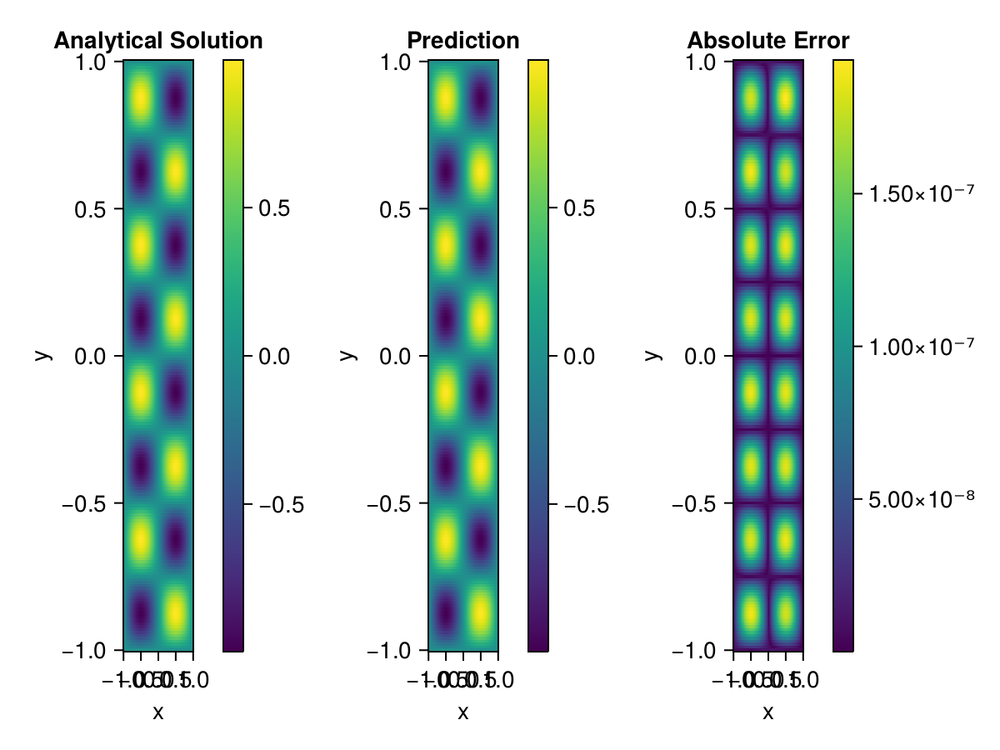

Helmholtz equation
Let us consider the Helmholtz equation in two space dimensions
\[\begin{aligned} &\Delta u(x, y)+k^{2} u(x, y)=q(x, y), \quad(x, y) \in \Omega:=(-1,1)^2 \\ &u(x, y)=0, \quad(x, y) \in \partial \Omega \end{aligned}\]
where
\[q(x, y)=-\left(a_{1} \pi\right)^{2} \sin \left(a_{1} \pi x\right) \sin \left(a_{2} \pi y\right)-\left(a_{2} \pi\right)^{2} \sin \left(a_{1} \pi x\right) \sin \left(a_{2} \pi y\right)+k^{2} \sin \left(a_{1} \pi x\right) \sin \left(a_{2} \pi y\right).\]
The exact solution is $u(x,y)=\sin{a_1\pi x}\sin{a_2\pi y}$. We chose $k=1, a_1 = 1$ and $a_2 = 4$.
using ModelingToolkit, IntervalSets, Sophon, Lux, Zygote
using Optimization, OptimizationOptimJL
@parameters x,y
@variables u(..)
Dxx = Differential(x)^2
Dyy = Differential(y)^2
a1 = 1
a2 = 4
k = 1
q(x,y) = -(a1*π)^2 * sin(a1*π*x) * sin(a2*π*y) - (a2*π)^2 * sin(a1*π*x) * sin(a2*π*y) + k^2 * sin(a1*π*x) * sin(a2*π*y)
eq = Dxx(u(x,y)) + Dyy(u(x,y)) + k^2 * u(x,y) ~ q(x,y)
domains = [x ∈ Interval(-1,1), y ∈ Interval(-1,1)]
bcs = [u(-1,y) ~ 0, u(1,y) ~ 0, u(x, -1) ~ 0, u(x, 1) ~ 0]
@named helmholtz = PDESystem(eq, bcs, domains, [x,y], [u(x,y)])\[ \begin{align} u\left( x, y \right) + \frac{\mathrm{d}}{\mathrm{d}y} \frac{\mathrm{d}}{\mathrm{d}y} u\left( x, y \right) + \frac{\mathrm{d}}{\mathrm{d}x} \frac{\mathrm{d}}{\mathrm{d}x} u\left( x, y \right) =& - 166.78 \sin\left( 12.566 y \right) \sin\left( 3.1416 x \right) \end{align} \]
Note that the boundary conditions are compatible with periocity, which allows us to apply BACON.
chain = BACON(2, 1, 5, 2; hidden_dims = 32, num_layers=5)
pinn = PINN(chain)
sampler = QuasiRandomSampler(300, 100)
strategy = NonAdaptiveTraining()
prob = Sophon.discretize(helmholtz, pinn, sampler, strategy)
@showprogress res = Optimization.solve(prob, BFGS(); maxiters=1000)u: ComponentVector{Float64}(filters = (filter_1 = (bias = [-0.2314659598914923; 0.05582558016352451; … ; -1.0121027886686396; -0.31337044252612245;;]), filter_2 = (bias = [0.4719960141787702; 0.24649727102246063; … ; 0.11484494331398715; 0.4043279297091962;;]), filter_3 = (bias = [0.733262590630234; 0.071308060810489; … ; -1.1633082851967318; 0.7847962556982773;;]), filter_4 = (bias = [-0.3824461597798676; -0.4188017417045611; … ; 1.0582051360606102; -0.7263485877108572;;]), filter_5 = (bias = [0.052677073517557; -0.8546669434412852; … ; 0.8549985192294846; -0.025732313814991217;;])), linear_layers = (layer_1 = (weight = [-0.3398984797476629 0.29061646750738473 … -0.28945124201641637 0.20349292281925477; 0.2007006810312657 -0.0735410277538756 … -0.15271874688016795 -0.34015684588193346; … ; 0.14013042848256554 0.17853046742608047 … -0.21509420058454384 -0.2797367595436998; -0.36536664610907055 0.1724311503477894 … 0.35582133270245936 -0.2553460437614621], bias = [-0.0063309941579463725; -0.048615868373343356; … ; -0.06240849858032026; 0.033652444790709626;;]), layer_2 = (weight = [0.017357087421729193 0.19534964455498033 … 0.1417589852407769 0.181750847078519; 0.3606823910050795 0.43080598269261494 … -0.19348967132495726 0.3782956988110328; … ; -0.03118016645367768 0.3392436013304402 … -0.21698886941558487 -0.18079724723250543; -0.020824822243274404 -0.38847472421165585 … 0.03465312577884683 -0.33978844408623543], bias = [0.045764094536689004; -0.000866684332219917; … ; -0.007798423172989614; -0.01875234593412919;;]), layer_3 = (weight = [0.3736159248844543 0.19828191920702673 … 0.272343134652966 0.09825836879250166; -0.18387915451443823 0.40198414353322026 … -0.1511999377252453 -0.2210834370688082; … ; 0.30390719972407343 0.09115435474223343 … 0.4290166667420093 0.258288676723082; -0.21151374292344255 -0.2394446157242977 … 0.09206539833841275 0.25886059631721425], bias = [-0.01026496055453392; 0.008593434220460446; … ; -0.00593231358044476; 0.000503266570127559;;]), layer_4 = (weight = [0.09852649898443726 -0.29890915067746004 … -0.07615177472666457 -0.36877000215509254; 0.18762954599211684 0.13270202633121245 … -0.08789076757724001 -0.38407038181718506; … ; -0.14582384438572818 0.2590222561412505 … -0.11391157400170887 0.3057369157849216; -0.4058508563645102 -0.21154541685010347 … -0.3769168760392111 -0.08113980338205053], bias = [0.0029130483341404116; -0.006822632965569365; … ; -0.0006303135483544003; 0.0365615618416123;;])), output_layer = (weight = [-0.351630600024345 0.032869183370365554 … -0.004251404739287593 0.6473927597535905], bias = [-0.05852470334200048;;]))Let's plot the result.
phi = pinn.phi
ps = res.u
xs, ys= [infimum(d.domain):0.01:supremum(d.domain) for d in domains]
u_analytic(x,y) = sinpi(a1*x)*sinpi(a2*y)
u_real = [u_analytic(x,y) for x in xs, y in ys]
u_pred = [sum(phi(([x,y]), ps)) for x in xs, y in ys]
using CairoMakie
axis = (xlabel="x", ylabel="y", title="Analytical Solution")
fig, ax1, hm1 = heatmap(xs, ys, u_real, axis=axis)
Colorbar(fig[:, end+1], hm1)
ax2, hm2= heatmap(fig[1, end+1], xs, ys, u_pred, axis= merge(axis, (;title = "Prediction")))
Colorbar(fig[:, end+1], hm2)
ax3, hm3 = heatmap(fig[1, end+1], xs, ys, abs.(u_pred-u_real), axis= merge(axis, (;title = "Absolute Error")))
Colorbar(fig[:, end+1], hm3)
fig